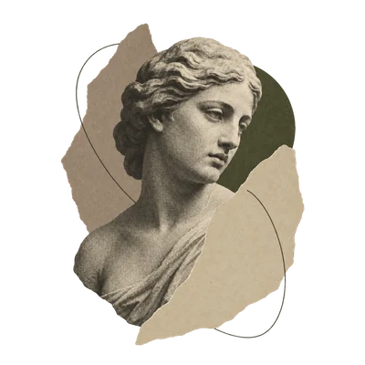
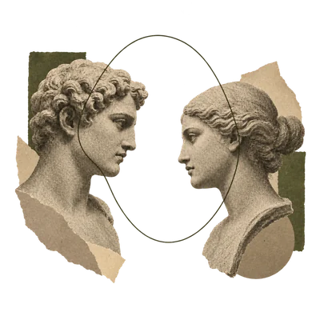
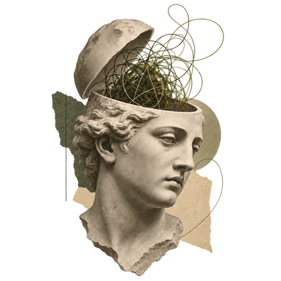
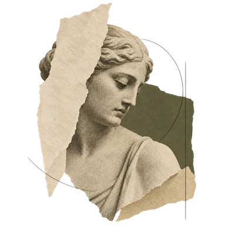
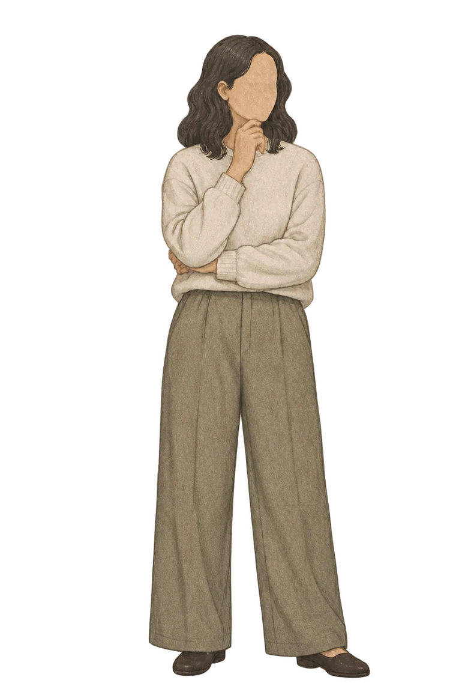
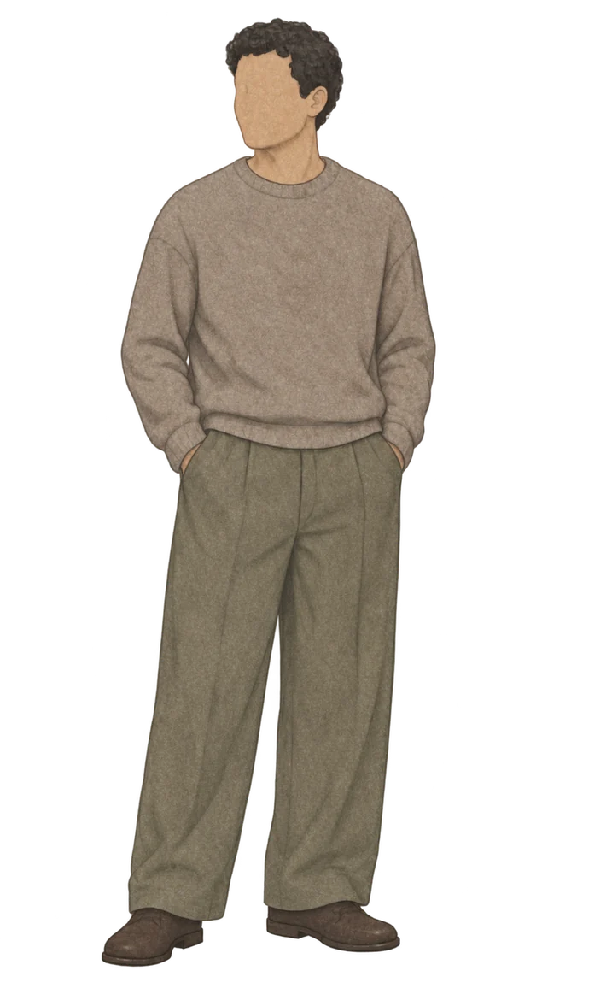
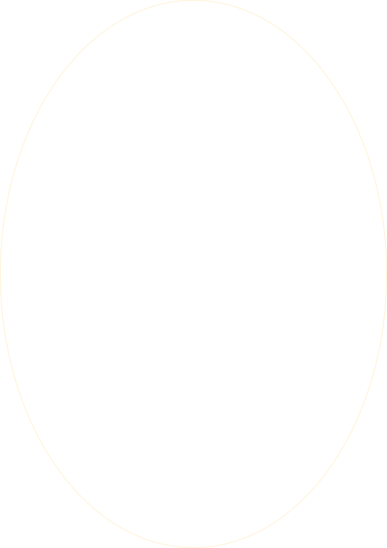

Тревога и страхи
- Панические атаки
- Тревожность
- Страхи и фобии
- Сверхнастороженность
- Навязчивые мысли




Вы можете обратиться ко мне, если сталкиваетесь с тревогой, сложными переживаниями, трудностями в отношениях или другими состояниями, которые влияют на вашу жизнь.
Понимать себя • слышать свои чувства • находить опору в себе
Не нашли свой запрос? Вы можете написать мне
и рассказать, что вас беспокоит.


Клинический психолог
Я Юлия Бердникова, клинический психолог.
В своей работе я уделяю внимание тому, как человек переживает сложные события, строит отношения с окружающими и самим собой.
Ко мне обращаются с тревогой, страхами, внутренними конфликтами, сложностями в отношениях и переживаниями, которые влияют на повседневную жизнь.
Для меня важно создать пространство, в котором можно открыто говорить о своих чувствах и постепенно разбираться в происходящем.
Моё образование и опыт
Руководитель центра
Клинический психолог
Ведёт индивидуальные консультации для взрослых. Работает с тревогой, страхами и паническими атаками, сложными переживаниями и трудностями в отношениях. 16 лет профессионального стажа.
Записаться к Юлии
Клинический психолог
Ведёт занятия по нейрографике — методу работы со своим состоянием через рисование. Простые линии и формы помогают замедлиться, увидеть, что сейчас волнует, и мягко переключиться. Уметь рисовать не нужно.
Клинический психолог
Помогает в кризисных ситуациях и после тяжёлых событий: работает с переживанием горя и утраты, посттравматическим стрессом и зависимым поведением.
Вы можете обратиться ко мне с личным запросом, если тревога, сложные эмоции, отношения или жизненные изменения влияют на вашу повседневную жизнь.
Личный запрос
Обсуждаем то, что беспокоит именно вас: тревогу и страхи, панические атаки, сложные эмоции, отношения, жизненные перемены и внутренние конфликты.
Пара или семья
Для пар и семей, когда в отношениях накопились конфликты, недопонимание или повторяющиеся сценарии. Обычно сначала проходит индивидуальная встреча с каждым, а затем — совместная.
Очно — в кабинете в Туле, просп. Ленина, 85 к5, 2 этаж. Свободные дни и время видны в онлайн-записи.
Онлайн — по понедельникам.

Психологическая работа
Мне важно, чтобы работа была понятной, бережной и связанной с вашим запросом. Конкретные методы и подходы мы обсуждаем на встрече. Например, в индивидуальной или семейной работе я могу использовать нейрографику — рисование помогает увидеть и прожить то, что сложно выразить словами.
Сначала определяем, что сейчас особенно важно и на чём стоит сосредоточиться.
Исследуем переживания, реакции и ситуации, которые влияют на повседневную жизнь.
Ищем способы лучше понимать себя и справляться с происходящим в подходящем темпе.
Работа строится последовательно: от знакомства и прояснения запроса — к совместной работе и подведению итогов.
Обсуждаем, что привело вас на консультацию.
Определяем важные темы и комфортный темп.
Возвращаемся к важным темам и отслеживаем изменения.
Обсуждаем результаты и возможные дальнейшие шаги.

16 лет профессионального стажа
Клинический психолог · данные профессионального профиля
Профессиональное образование и дополнительная подготовка помогают мне выбирать подходы к работе с разными запросами.
Основное образование
Профессиональная переподготовка
Сертификационная программа
Профессиональный семинар
Опыт клиентов
Здесь можно познакомиться с отзывами людей, которые обращались ко мне за психологической помощью.
Мне важно, чтобы во время консультации вы могли сосредоточиться на себе и нашем разговоре. Здесь вы можете заранее посмотреть пространство, в котором проходят встречи.
7 фотографий · нажмите на изображение, чтобы открыть галерею
Здесь я собрала ответы на вопросы, которые могут возникнуть перед нашей первой встречей.
Вы можете обратиться ко мне, если переживания, тревога, конфликты или другие трудности влияют на вашу повседневную жизнь. Необязательно ждать, пока ситуация станет критической.
Мы знакомимся, обсуждаем вашу ситуацию и вместе уточняем запрос и комфортный формат дальнейшей работы.
Количество встреч зависит от запроса и динамики работы. Мы можем обсуждать это по ходу консультаций.
Да. На первой встрече мы можем вместе разобраться, что сейчас беспокоит вас больше всего.
Содержание консультаций конфиденциально в пределах профессиональных и законодательных требований.
Индивидуальная консультация — 4 000 ₽, семейная — 7 000 ₽. Встреча длится 1 час.
Да. Онлайн-консультации проходят по понедельникам, очные — в кабинете в Туле в свободные дни и часы, которые видны в онлайн-записи.
Напишите удобным способом. Условия записи и переноса мы согласуем до первой встречи.
Если вы хотите обсудить свою ситуацию или уточнить возможность консультации, запишитесь онлайн и выберите удобное время.
Записаться

